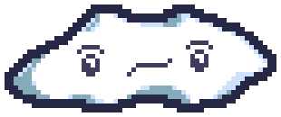
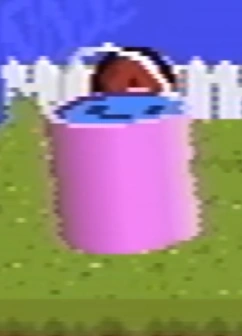
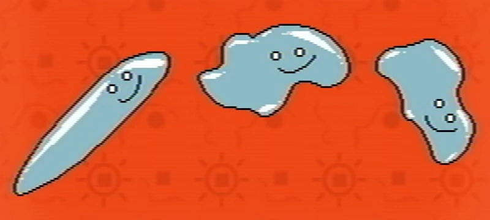
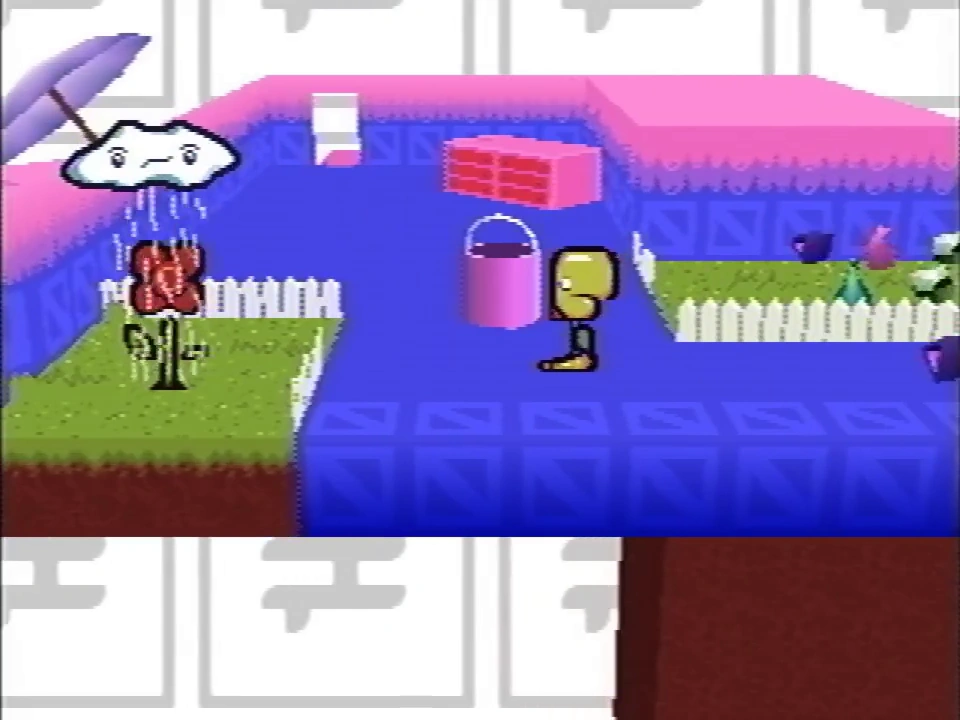

Fanmade recreated sprite
Wavey is one of the six Pets first introduced in Even Care. He is closely tied to Randice, following him wherever he moves to and providing him with his means of survival by raining on them.

Wavey contained in the bucket
He appears to be a small rain cloud with the ability to dissipate and reassemble his body at will, allowing them to warp to any given location. He has a concerned expression on his face. When caught inside the bucket, he reverts to a pool of water with an indifferent expression on its surface.
Wavey is a cloud.
He is afraid of everything. He is especially afraid of freezing.
According to him, he is never the same person for more than a few seconds.

An old version of Wavey
Wavey first appears in Petscop 1, alongside Randice.
At first, approaching Wavey will cause him to dissipate and warp to the adjacent plot of grass with Randice in avoidance of the player. In order to cancel this action out and allow Wavey's capture, the player must first push the nearby bucket onto the plot that both pets move to on a spot that will be directly above Randice once he spawns there, then approach Randice and Wavey to lead Randice to spawn in the alternate plot. If the bucket is placed in the correct spot, a "clunk" noise will sound as Randice bumps into the bucket as he rises above ground with Wavey. The water Wavey releases will then collect in the bucket and his body will release as water as well, joining the rest in the bucket and trapping him. The player can then catch him by walking into the bucket.
Wavey's description was shown in Petscop 19, during the "belle" recording.
The Extra Stuff menu suggests that Wavey was originally able to jump as a puddle of water.

Randice and Wavey in Even Care
Wavey may be a reference to depression, as the mental illness is often associated with the imagery of rain clouds (representing crying and feeling unhappy). Wavey also appears to be upset, being the only known Pet to actively express a negative emotion. Building on to his physical connection to Randice, this may suggest that Wavey and Randice are two halves of the same figurative entity—Randice being the representation of happiness, and Wavey acting as a representation of the more depressive side. This is further supported by the fact that Wavey follows Randice around, possibly representing the unavoidability of depression.
Randice's pet description suggests that Wavey is manipulating or tricking Randice into staying with him.
The only time Wavey appears in water form besides concept art is in the bucket. The direction of the "wavey_jumping" concept art appears to be Wavey jumping from the left, falling down to the right. It may be possible that if Randice was in the right plot of dirt while Wavey was still in a bucket, Wavey could jump out of the bucket to fall on Randice, practically restarting the puzzle to retrieve Randice and Wavey.
| People | Paul · Belle · Carrie · Marvin · Rainer · Anna · Mike · Lina · Jill · Daniel |
|---|---|
| Characters | Guardian · Amber · Pen · Randice · Roneth · Toneth · Wavey · Care · Tiara |
{kind=link}
{kind=link}
{kind=link}
{kind=link}
{kind=link}
{kind=link}
{kind=link}
{kind=link}